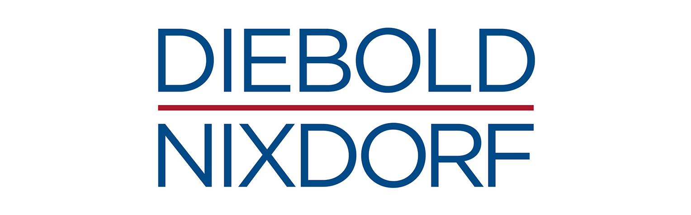

- Rochester Institute of Technology
- Golisano College of Computer and Information Sciences
- School of Interactive Games and Media (IGM)
- Bachelors of Science
- Game Design and Development Major
- Psychology Minor
- August 2014 - December 2018
- Graduated Cum Laude
- GPA: 3.41
-  Unofficial Transcript
- RIT Website
- IGM Website
Game Design and Development
Rochester Institute of Technology is number 3 on the princeton top 10 list for Game Design schools, which barely captures all that this school has doen for me. In my time at RIT I have been given every opportunity to grow as a developer and designer, ranging from courses that supported and grew my skills in programming, and game design. I was able to try out the skills they taught me in small ways like in class exercises, medium size projects like a class centered around 3 5-week projects, and a class that dedicated its entire emester to the creation of a single polished game- shown off at the schools big event: ImagineRIT.
 Bachelors of Science
Bachelors of Science - Game Design & Development
- August 2014 - December 2018
Rochester Institute of Technology
- Jan 15, 2019 - April 25, 2019
- Unity Developer
- Nintendo Switch Development
- Mobile Development
- Web Development
- Quality Assurance
- Unity 3D
- Nintendo SDK
- JavaScript
- HTML & CSS
- C#
Work:
Technologies:
Second Avenue Learning
Durring my internship at Second Avenue Learning I worked on a few different projects. My main focus was a game for the nintnedo switch- built using the nintendo sdk and unity 3d. On this project I worked on updating existing features and gameplay mechanics to feel better for the player, update and expand the User Interface, adding new features and mechanics, and getting the project ready for release.
Secondly, I assisted with a feature for a a mobile app, more specifically I developed a way to resolve* a known issue on Android. The resolution was a workaround utilizing a plugin found designed with the issue in mind, and developing systems to accomdate some of the repercussions of the workaround plugin. A fun balance of what was best for the application that was being created, the experience of the users, and tryign to make th best of the situation creted by the limitations of the technology being used.
I also worked on develping an open source web application. For this project I did work developing front-end modules for features that would be used throughout multiple pages of the application. On top of that I worked on reworking some features from the prototype to be better suited for the demo version.
Finally, for a short period I did some minor Quality Insurance work while I was between projects. This extended to running through a web application to make sure features worked on multiple browsers and operating systems, as well as find niche bugs and document all that I found.
 Unity Developer
Unity Developer - 4 months
-
 Website
Website
Second Avenue Learning
- August 21, 2017 - December 15, 2017
- Software Engineering Intern
- New Technologies/ Incubation
- Data Analytics
- Data Visualization
- Data flow automation scripting
- Unity 3D, AR Kit Demo
- Splunk
- Javascript
- Unity 3D w/ AR Kit
- C#
Work:
Technologies:
Diebold Nixdorf
Durring my internship at Diebold Nixdorf I was a part of the New Technologies Incubation team, which focused on ATM service inprovement durring my time there. We used Splunk, a data analytics platform, to help analyse and visualize data surrounding the issues of ATMs and help speed up or even automate the resolution of issues. Connected to that, I was able to help automation within our production enviroment using javascript with cscript to help process data. Finally, I was also loaned to another department to create a demo of Diebold Nixdorfs new Fusion ATM concept for a financial technology expo/conference. The demo was built using Unity 3D and ios ARKit plugin. For that project I was the only programmer, and worked with an UX desinger and 3D artist.
- Software Engineering Intern
- 4 months
-
Website
Salsaritas Cantina and Grille
- September 4, 2015 - December 10, 2018
- Food Server
- Part Time
- Food and portion control
- Hygiene and food saftey
- Food preparation
- General cleaning duties
- Teamwork
- Communication
- Customer Service
Responsibilities:
Skills:
Salsaritas Cantina and Grille @ RIT
While in school at Rochester Institute of Technology I worked part time at an on-campus mexican restaurant: Salsaritas Cantina and Grille. While It helped me have some semblance of an in-come, It also provided me with a learning experiance thatw as invaluable; I learned teamwork, communication, and how to deal with a rush- in ways that I hadn't with my own game development experience.
- Food Server
- 3 years
-
Website